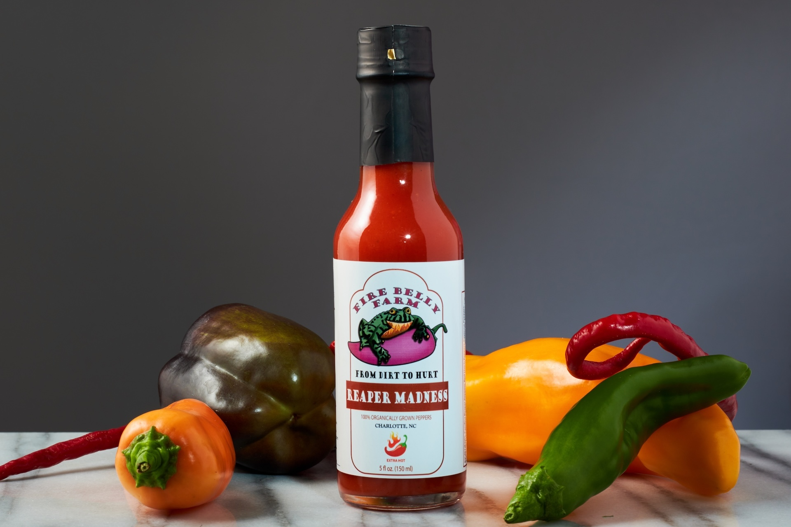
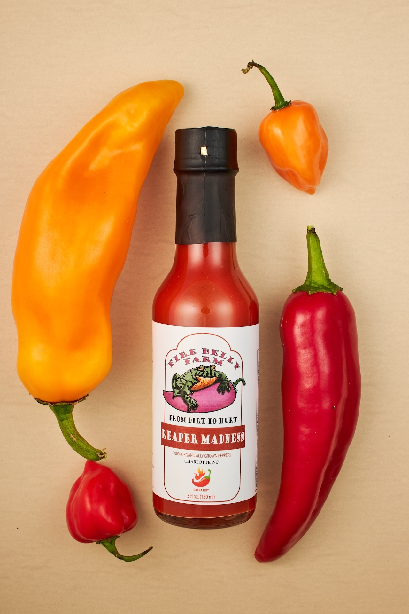

Firebelly Farms
Hot sauce hero shots & flat-lays
Firebelly came to me before they had a clear visual identity. They needed clean shots of the bottles, but anything generic was going to read like every other small-batch hot sauce on the shelf.
The peppers ended up doing the work. Using their own ingredients as props meant the line had a visual signature built in from their own product, not borrowed from a stock playbook. The hero shot is still in use on their site years later. The flat-lay became their main background.